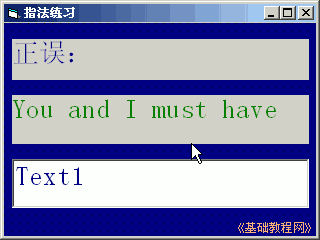
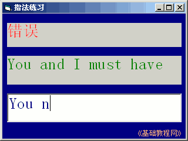

2011-2012 第一学期九年级 VB 教学课程设计
作者：TeliuTe 来源：基础教程网
六、判断输入是否正确 返回目录 下一课学习目标：学会取出字符，学会比较两个数据；
注意事项：代码在英文下输入，注意字母和数字l和1；
1、绘制控件
1）打开一个标准EXE，绘制两个标签，一个文本框，
Label1的Caption属性改为“正误：”，另一个标签改为“You and I must have”
2）设置好控件的字体和颜色；

3）进入代码窗口，点击对象下拉列表，选择 Text1，在出来的代码段中输入；
4）保存为“第六课”，点菜单“运行－启动”，在文本框中输入内容；

课后记 2011-9-30 18:14：
拼写错误很多，text变成test本节学习了判断输入是否正确的基础知识，如果你成功地完成了练习，请继续学习下一课内容；
本教程由86团学校TeliuTe制作|著作权所有
基础教程网：http://teliute.org/
美丽的校园……
转载和引用本站内容，请保留版权信息和本站链接。